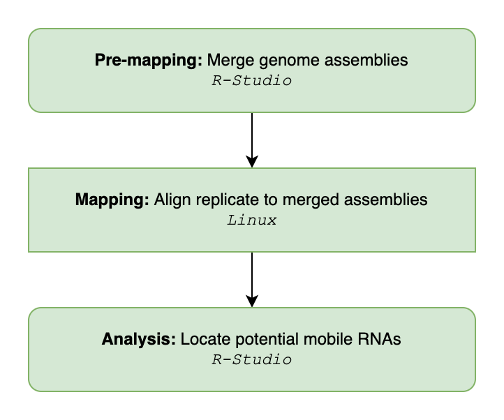
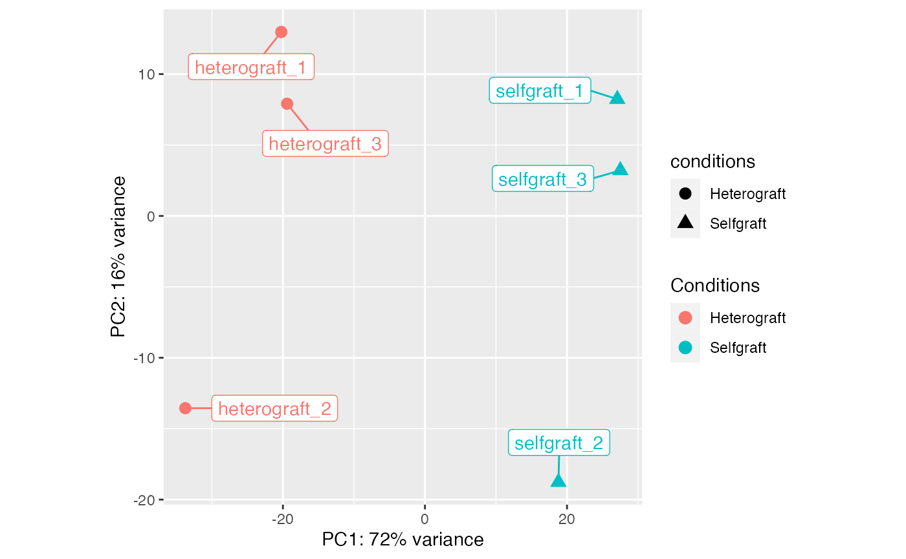

Overview of the mobileRNA R package for mobile sRNA identification between genotypes
Katie Jeynes-Cupper, Marco Catoni
2023-06-20
Source:vignettes/mobileRNA.Rmd
mobileRNA.RmdIntroduction
In plants, systemic signalling is an elaborated molecular system which allows to coordinate plant development at the entire organism level, integrating and transmitting the information perceived from environment to distant organs. An important role in long-distance signalling is played by small RNA molecules (sRNAs). These sRNAs can be produced in a tissue and then being transported systemically across the vascular system into recipient organs, where they can induce a molecular response and coordinate physiological changes. Being mobile sRNA able to move across a graft junction, their study can bring to novel methods for transferring traits into crops, for example by combining genotypes by grafting, rather than using breeding or transgenic approaches. Several genomics studies used grafting to explore and characterise mobile sRNAs, however, the approach used to distinguish these mobile molecules from the sequencing noise is not standardised, and for each study it is necessary to adapt general RNA sequencing pipelines to the specific study of mobile molecules.
Here we introduce the R Package , to aid the identification of mobile RNA molecules in a chimeric system, enable the visualization of the results, and supports functional analysis. The package generates mobile molecules through a consensus classification system, in hand with the optional use of differential expression analysis and can quickly achieve results.
Methods
This manual offers a pipeline for the analysis of sRNAseq data from plant grafting experiments, specifically to identify the movement of sRNA molecules across a graft junction from one genotype to another.
The pre-processing method is different to others, as it involves mapping the samples to a merged reference genome, comprising of the two genotypes in the heterograft system. In addition, all samples are analysed against a list of all identified sRNA cluster loci to ensure that all sRNA clusters are fairly recognised in the analysis
The analysis method takes the results produced by ShortStack mapping and cluster analysis and identified potential mobile sRNA by removing those mapped to the destination tissue genotype and removing additional falsely mapped sRNA. Previous methods have not employed statistical analysis to select mobile sRNA, here we have incorporated this into the analysis options. This adds greater flexibility and control to the user. By the end of the analysis using mobileRNA, the user could have produced a number of figures to represent the data. This includes plots to represent the:
Distribution of sRNA sizes across samples, total dataset consensus sRNA,or across the potential mobile sRNA.
Distribution of sRNA across genomic features
Sample distance, including a PCA and heatmap
Heatmap of mobile sRNA expression
Installation
The latest version of mobileRNA can be installed via GitHub using the devtools package:
if (!require("devtools")) install.packages("devtools")
devtools::install_github("KJeynesCupper/mobileRNA", ref = "main")Load into Library:
Once installed, you will have access to the following functions:
Pre-processing
Analysis
- 1:
RNAimport() - 2:
RNAconsensus() - 3:
RNAsubset() - 4:
RNAdistribution() - 5:
plotSamplePCA() - 6:
plotSampleDistribution() - 7:
RNAanalysis() - 8:
RNAmobile() - 9:
plotHeatmap() - 10:
RNAmean() - 11:
RNAfeatures() - 12:
RNAattributes() - 13:
RNAsequences()
Further details on how each function operates will be provided later on in the documentation. For some functions there are recurring arguments. In the pre-processing steps, the files argument occurs frequently and tells the function a local directory path to a folder holding a particular file(s). Similarly, the argument out instructs the function of the location to save the output file(s). In the analysis steps, some important arguments include samples which refers to the a character vector contains the names of all samples in the experiment, conditions which refers to a character vector containing a select few samples depending on your analysis preference, groups which refers to a character vector of the two experimental conditions and lastly controlswhich refers to the control samples in the analysis. A recurring argument in the analysis pipeline is the method argument which tells the function how to process the data from the choice of two analytical methods (i.e."DESeq", or "edgeR"). All other arguments are discussed in further detail by looking at the a functions help file.
The workflow is shown below. It begin in R-Studio to merge the two genome assemblies into one, then the pre-processing moves into Linux to align each replicate to the merged reference and then back into R-Studio to undertake the analysis to identify potentially mobile RNA species.

Going forward, we assume standard quality control steps on raw samples has been completed (i.e. trimming of adapters and low quality reads)
An overview of the data used
For the following examples, a semi-synthetic small RNA-seq data set has been utilised to simulate the movement of sRNA molecules from an Tomato (Solanium lycopersicum) rootstock to a Eggplant (Solanium melongena) scion, a grafting system known to be compatible. The three heterograft replicates, known as heterograft_1, heterograft_2 and heterograft_3 are individual tomato replicates spiked with 150 tomato sRNA clusters. While the selfgraft replicates, known as selfgraft_1, selfgraft_2 and selfgraft_3, are the individual tomato replicates without the spiked tomato sRNA clusters. Moreover, the replicates mirror each other where, for instance, heterograft_1 and selfgraft_1 are the same replicate, either with or without the spiked clusters. These replicates serve for the aim to analyse sRNA mobility.
The data set, called sRNA_data, stores a matrix containing the pre-processed data from the experiment. As a user, this allows you to see what a full data set might look like and how you might expect it to change across the analysis.
These can be loaded in these R workspace by using the following command:
data("sRNA_data")In addition, there are two further datasets called “sRNA_data_consensus” and “sRNA_data_mobile” which are utilised in the function documentations. Both build on the “sRNA_data” dataset where “sRNA_data_consensus” contains the RNA consensus results formed by the function [RNAconsensus()]. While, the “sRNA_data_mobile” contains only the likely mobile sRNAs selected by the function [RNAmobile()] under the default parameters.
Data organisation
There are Two key elements required for the pipeline analysis: * sRNA-seq sample replicates (.fastq/.fq) * Two reference genomes (.fasta/.fa)
And one additional element; to improve functional analysis: * Two reference genome annotations (.gff/.gff3)
Naming data files
It is recommended to rename your files to names you wish for them to be represented as within the analysis and shown as labels in plots. Plus, it makes the analysis easier!
For example, instead of names such as:
- 1:
sample_1.fq - 2:
sample_2.fq - 3:
sample_3.fq - 4:
sample_4.fq - 5:
sample_5.fq - 6:
sample_6.fq
For the example data set included in the package, here we have renamed the files based on the condition (treatment or control).For the hetero-grafts, where the is a eggplant scion and an tomato rootstock:
- 1:
heterograft_1.fq - 2:
heterograft_2.fq - 3:
heterograft_3.fq
and for the eggplant self-grafts:
- 4:
selfgraft_1.fq - 5:
selfgraft_2.fq - 6:
selfgraft_3.fq
Pre-Processing
The pre-processing step involves cleaning raw data and aligning data to the merged genome. We recommend installing and using the ShortStack (https://github.com/MikeAxtell/ShortStack) program to aligns samples to the merged genome and undertake cluster analysis. This program is specifically formulated for sRNAseq analysis, utilising Bowtie (Version 1) to map samples and a specifically formulated algorithm to cluster sRNAs.
Here, we introduce an alternative mapping method for the analysis of plant heterograft samples. The heterograft system involves two genotypes; here the two genome references are merged into a single reference to which samples are aligned to.
mobileRNA offers a function to merge two FASTA reference genomes into one. To distinguish between the reference genomes in a merged file, it is important to make sure the chromosome names between the genomes are different and distinguishable. The function below added a particular character string to the start of each chromosome name in each reference genome. As standard, the string A_ is added to the reference genome supplied to genomeA and B_ is added to the reference genome supplied to genomeB. These can be customised to the users preference, see manual for more information.
Going forward, the pipeline has assumed that the sRNA-seq samples have met quality control standards.
Pre-mapping
Merging Genome Assemblies
Here we merge the two reference genomes into a single merged genome using the [mobileRNA::RNAgenomeMerge()] function. As default, this function changes the chromosome names of each genome to ensure they are distinguishable. To do so, the function requires an input of the initials of each organism’s Latin name. But why do this:
If the two genomes use the same pattern to name the chromosomes, the user will not be able to differentiate the chromosomes from one another in the merged genome. This could be solves by adding letters to the chromosomes of one of the genomes, for example,
SMto represent the Latin name of eggplant.If a chromosome naming pattern contains punctuation, the mapping step will not work.
In the example, the Solanum lycopersicum (version 4) genome contains a full-stop/period within each chromosome name which needs to be removed as well. Here we rename the chromosomes of the tomato genome to SL and the chromosomes related to the eggplant genome (Solanum melongena) to SM.
RNAmergeGenomes(genomeA ="/Users/user1/projectname/workplace/reference/ref1.fa",
genomeB ="/Users/user1/projectname/workplace/reference/ref2.fa",
abbreviationGenomeA = "SL",
abbreviationGenomeB = "SM",
out_dir = "/Users/user1/projectname/workplace/reference/merge/
ref_merged.fa")Merging Genome Annotations
To identify associates between sRNA clusters and genomic features, the genomic annotation files (GFF) of each reference genome must be merged in the same way the reference genomes were. This includes following the same naming patterns for the chromosomes in each genome as undertaken earlier with the RNAmergeGenomes() function. To undertake a similar merging between the two GFF files, use the RNAmergeAnnotations function.
## merge the annotation files into a single annotation file
RNAmergeAnnotation(annotationA = "/Users/user1/projectname/workplace/
annotation/annotation_1.gff3",
annotationB = "/Users/user1/projectname/workplace/
annotation/annotation_1.gff3",
abbreviationAnnoA = "SL",
abbreviationAnnoB = "SM"
out_dir = "/Users/user1/projectname/workplace/
annotation/merge/anno_merged.gff")Auto-Detection of sRNA Cluster
Here we identify and build a list sRNA clusters within each sample to assist the mapping step later on to ensure consistency across the analysis.
We recommend installing the ShortStack (https://github.com/MikeAxtell/ShortStack) program to detect sRNA clusters and align sRNAseq samples.
Step 2 - Build sRNA cluster list
Now, we collate all the sRNA loci information from each sample into a text file.
# location of step 1 output
folder <- <./output/directory/from/step/1/>
# name and location to save output file to (must be .txt)
save_folder <- <./output/directory/ClustersInfo.txt>
# names of samples (ie. folder names)
sample_names <- c("<treatment_1>", "<treatment_2>", "<control_1>","<control_2>")
loci_info <- RNAloci(files = folder,
out = save_folder,
samples = sample_names)Mapping
Each sample is mapped to the merged reference genome with the list of sRNA clusters.
ShortStack \
--readfile <control_1.fastq> \
--genomefile <merged_reference.fa> \
--locifile <./output/directory/ClustersInfo.gff3> \
--bowtie_cores 6 \
--mmap n \
--mismatches 0 \
--nohp \
--mincov 5 \
--outdir <./output/directory/step2/>Analysis
Here, the analysis of the pre-processed data occurs, with the aim to identify if any mobile sRNA molecules are traveling from one genotype to the other in your grafting system.
Import Data
In the pre-processing steps, the data was cleaned and aligned to the merged reference genome. During the mapping step, a folder for each sample is created which stores all the results in. The analysis steps requires the information which is stored in the Results.txt.
The RNAimport() function imports the data from the folder containing all sample folders. The function extracts the required information, stores it in a matrix.
The function requires some information to coordinate the importation and calculations. It requires a directory path to your processed samples; this is the path to the folder containing all the individual sample folders which is stores in argument directory. The second directory path is to the loci file containing information on the loci of the sRNA clusters across the analysis, stored in the argument loci. The last pieces of information the function requires a vector containing the sample names, both treatment and control replicates which is stored in the argument samples. The sample names must match the names of the folders produced in the mapping, and stored in the directory supplied to the argument directory.
## Import & organise data.
results_dir <- "./analysis/alignment_unique_two/"
sample_names <- c("heterograft_1","heterograft_2", "heterograft_3",
"selfgraft_1", "selfgraft_2", "selfgraft_3")
sRNA_data <- RNAimport(input = "sRNA",
directory = results_dir,
samples = sample_names)
# example dataframe
head(sRNA_data)
#> Locus chr start end Cluster
#> 1 1:100000956-100001076 1 100000956 100001076 cluster_1
#> 2 1:100001486-100001554 1 100001486 100001554 cluster_2
#> 3 1:100001646-100001731 1 100001646 100001731 cluster_3
#> 4 1:10001034-10001073 1 10001034 10001073 cluster_4
#> 5 1:100011795-100011930 1 100011795 100011930 cluster_5
#> 6 1:10002000-10002065 1 10002000 10002065 cluster_6
#> DicerCall_heterograft_1 Count_heterograft_1 RPM_heterograft_1
#> 1 24 19 1.908
#> 2 24 3 0.301
#> 3 N 3 0.301
#> 4 24 1 0.100
#> 5 24 11 1.105
#> 6 24 9 0.904
#> MajorRNA_heterograft_1 DicerCall_heterograft_2 Count_heterograft_2
#> 1 AGUGACGGUCUCAUGUAACAUAGA 24 14
#> 2 AAAGAGUAGACAUAUAUUAAAUGG 20 5
#> 3 CUGUCUCAUGUGACACUCUUUCACU 23 6
#> 4 AAAUUGUCAUUUAGUCAGAGGAAU N 0
#> 5 AUAGACAAAUCGCACUCGCUCUCG 24 2
#> 6 UUAGAUUUCUGGAGUAACAACUUU N 2
#> RPM_heterograft_2 MajorRNA_heterograft_2 DicerCall_heterograft_3
#> 1 1.803 AGUGACGGUCUCAUGUAACAUAGA 24
#> 2 0.644 ACAUAUUUUUUUGGACGAAC 24
#> 3 0.773 UCUGUCUCAUGUGACACUCUUUC 24
#> 4 0.000 N 24
#> 5 0.258 AAGUGUCUACCCAUUGUGAUUCGC 24
#> 6 0.258 UUAUUGACAAACUAUAACU 22
#> Count_heterograft_3 RPM_heterograft_3 MajorRNA_heterograft_3
#> 1 30 2.953 AGUGACGGUCUCAUGUAACAUAGA
#> 2 1 0.098 UAUGUCUACUCUUUAUUACUCUCC
#> 3 11 1.083 AUCUUGUCAAGUGAAAGAGUGUCA
#> 4 11 1.083 AUUCCUCUGACUAAAUGACAAUUU
#> 5 5 0.492 AAUCACAAUGGGUAGACACUUAGA
#> 6 3 0.295 UUAGAUUUCUGGAGUAACAACUUU
#> DicerCall_selfgraft_1 Count_selfgraft_1 RPM_selfgraft_1
#> 1 24 19 1.909
#> 2 24 3 0.301
#> 3 N 3 0.301
#> 4 24 1 0.100
#> 5 24 11 1.105
#> 6 24 9 0.904
#> MajorRNA_selfgraft_1 DicerCall_selfgraft_2 Count_selfgraft_2
#> 1 AGUGACGGUCUCAUGUAACAUAGA 24 14
#> 2 AAAGAGUAGACAUAUAUUAAAUGG 20 5
#> 3 CUGUCUCAUGUGACACUCUUUCACU 23 6
#> 4 AAAUUGUCAUUUAGUCAGAGGAAU N 0
#> 5 AAUGGGUAGACACUUAGAUACAUG 24 2
#> 6 UUAGAUUUCUGGAGUAACAACUUU N 2
#> RPM_selfgraft_2 MajorRNA_selfgraft_2 DicerCall_selfgraft_3
#> 1 1.804 AGUGACGGUCUCAUGUAACAUAGA 24
#> 2 0.644 ACAUAUUUUUUUGGACGAAC 24
#> 3 0.773 UCUGUCUCAUGUGACACUCUUUC 24
#> 4 0.000 N 24
#> 5 0.258 AUAGACAAAUCGCACUCGCUCUCG 24
#> 6 0.258 AGAUUUCUGGAGUAACAACUUUG 22
#> Count_selfgraft_3 RPM_selfgraft_3 MajorRNA_selfgraft_3
#> 1 30 2.954 AGUGACGGUCUCAUGUAACAUAGA
#> 2 1 0.098 UAUGUCUACUCUUUAUUACUCUCC
#> 3 11 1.083 AUCUUGUCAAGUGAAAGAGUGUCA
#> 4 11 1.083 AUUCCUCUGACUAAAUGACAAUUU
#> 5 5 0.492 AAUCACAAUGGGUAGACACUUAGA
#> 6 3 0.295 UUGACAAACUAUAACUUAAAUUSample-level quality control
A handy step in the analysis is to assess the overall similarity between sample replicates to understand which samples are the most similar and which are different, and where the most variation is introduced in the data set. As well as understanding whether the data set meets your expectations. It is expected that between the conditions, the sample replicates show enough variation to suggest that the replicates are from different groups.
To investigate the sample similarity/difference, we will undertake sample-level quality control using three different methods:
- Distribution of RNA classes within each sample
- Principle component analysis (PCA)
- hierarchical clustering Heatmap
This will show us how well samples within each condition cluster together, which may highlight outliers. Plus, to show whether our experimental conditions represent the main source of variation in the data set.
Here we will be employing an unsupervised clustering methods for the PCA and hierarchical clustering Heatmap. This involves an unbiased log2-transformation of the counts which will emphasis the the sample clustering to improve visualization. The DESeq2 package contains a particularly useful function to undertake regularized log transformation (rlog) which controls the variance across the mean, and in this package we have utilized this for the quality control steps.
Plot the distribution of RNA classes within each sample
Explore the number of each RNA class identified within each sample using the RNAdistribution function which produces a table and plots the results. The results can be plotted as either a bar chart (style = "bar") or a line graph (style = "line") for each sample and can be shown in a bar chart facet (facet = TRUE) or in as a single line graph, where each line represents a sample (together=TRUE). Alternatively, the results can be plotted individually for each sample in either format.
sample_distribution_line <- RNAdistribution(sRNA_data,
style = "line",
together = FALSE,
facet = TRUE)
sample_distribution_bar <- RNAdistribution(sRNA_data,
style = "bar",
facet = TRUE)
#> Class heterograft_1 heterograft_2 heterograft_3 selfgraft_1 selfgraft_2
#> 1: 20 1720 2102 1306 1719 2101
#> 2: 21 4940 5655 4278 4938 5653
#> 3: 22 3655 4883 3422 3655 4883
#> 4: 23 6657 6909 7469 6650 6902
#> 5: 24 99330 85514 101771 99191 85374
#> selfgraft_3
#> 1: 1305
#> 2: 4276
#> 3: 3422
#> 4: 7462
#> 5: 101630

An example line graph (A) and bar graph (B), to show the distribution of RNA classes within each sample
Principle component analysis to assess sample distance
Principal Component Analysis (PCA) is a useful technique to illustrate sample distance as it emphasizes the variation through the reduction of dimensions in the data set. Here, we introduce the function plotSamplePCA()
group <- c("Heterograft", "Heterograft", "Heterograft",
"Selfgraft", "Selfgraft", "Selfgraft")
plotSamplePCA(sRNA_data, group)An example of a PCA, illustracting the sRNA data set sample similarity
Hierarchical clustered heatmap to assess sample distance
Similarly, to a PCA plot, the plotSampleDistance() function undertakes hierarchical clustering with an unbiased log transformation to calculate sample distance and is plotted in the form of a heatmap.
plotSampleDistance(sRNA_data)
An example of a heatmap,illustracting the sRNA data set sample similarity
Define the consensus RNA class
Have a look at the sRNA_data object, you will see that for each sample the class of sRNA has been determined (see columns with names starting with DicerCall). The result will either state a number from 20-24 which represents the nucleotide length of the sRNA, or, state NA/N which represents that the sRNA was unclassified in the sample. There is usually some discrepancies between the classification of a sRNA, therefore, a consensus class can be assigned based off the information from the treatment samples. The RNAconsensus() function is used to compute this by counting the number of occurrences of classifications for a sRNA. The consensus is determined based on the class with the most counts.
The function requires the user to state which samples to base the consensus calculation on (see argument conditions). It is recommend to state the treatment samples only, because these are the ones of interest. However, if you have less than two treatment replicate, calculating the consensus class this way could dramatically shrink your data - although this could be a benefit as it’ll make the analysis more stringent. Therefore, in this particular circumstance, it is suggested that the user tries defining the consensus class with all samples in parallel to defining the consensus with the treatment samples.
The function also works to remove noise from your data. If the user wishes to keep the noise, set tidy=FALSE to prevent the removal of unclassified clusters.
For the downstream analysis, it can be useful to define the distinct 24-nt and 21/22-nt populations of sRNA molecules at the beginning of the analysis. Hence, the data should be subset. To subset the data, use the RNAsubset() function to choose which sRNA populations to include: 20-nt, 21-nt, 22-nt, 23-nt, or 24-nt. It is recommended to subset the data into two dataframes: one which includes only 24-nt sRNA and the other to include both 21-nt and 22-nt sRNAs. To instruct the RNAsubset() function to select specific groups, use the type argument.
## define consensus sRNA classes based of treatment/hetero-graft samples
samples <- c("heterograft_1","heterograft_2", "heterograft_3")
# define consensus, store as a data summary file.
sRNA_data_consensus <- RNAconsensus(data = sRNA_data,
conditions = samples,
tidy=TRUE)
head(sRNA_data_consensus)
#> Locus chr start end Cluster
#> 1 1:100000956-100001076 1 100000956 100001076 cluster_1
#> 2 1:100001486-100001554 1 100001486 100001554 cluster_2
#> 3 1:100001646-100001731 1 100001646 100001731 cluster_3
#> 4 1:10001034-10001073 1 10001034 10001073 cluster_4
#> 5 1:100011795-100011930 1 100011795 100011930 cluster_5
#> 6 1:10002000-10002065 1 10002000 10002065 cluster_6
#> DicerCall_heterograft_1 Count_heterograft_1 RPM_heterograft_1
#> 1 24 19 1.908
#> 2 24 3 0.301
#> 3 N 3 0.301
#> 4 24 1 0.100
#> 5 24 11 1.105
#> 6 24 9 0.904
#> MajorRNA_heterograft_1 DicerCall_heterograft_2 Count_heterograft_2
#> 1 AGUGACGGUCUCAUGUAACAUAGA 24 14
#> 2 AAAGAGUAGACAUAUAUUAAAUGG 20 5
#> 3 CUGUCUCAUGUGACACUCUUUCACU 23 6
#> 4 AAAUUGUCAUUUAGUCAGAGGAAU N 0
#> 5 AUAGACAAAUCGCACUCGCUCUCG 24 2
#> 6 UUAGAUUUCUGGAGUAACAACUUU N 2
#> RPM_heterograft_2 MajorRNA_heterograft_2 DicerCall_heterograft_3
#> 1 1.803 AGUGACGGUCUCAUGUAACAUAGA 24
#> 2 0.644 ACAUAUUUUUUUGGACGAAC 24
#> 3 0.773 UCUGUCUCAUGUGACACUCUUUC 24
#> 4 0.000 N 24
#> 5 0.258 AAGUGUCUACCCAUUGUGAUUCGC 24
#> 6 0.258 UUAUUGACAAACUAUAACU 22
#> Count_heterograft_3 RPM_heterograft_3 MajorRNA_heterograft_3
#> 1 30 2.953 AGUGACGGUCUCAUGUAACAUAGA
#> 2 1 0.098 UAUGUCUACUCUUUAUUACUCUCC
#> 3 11 1.083 AUCUUGUCAAGUGAAAGAGUGUCA
#> 4 11 1.083 AUUCCUCUGACUAAAUGACAAUUU
#> 5 5 0.492 AAUCACAAUGGGUAGACACUUAGA
#> 6 3 0.295 UUAGAUUUCUGGAGUAACAACUUU
#> DicerCall_selfgraft_1 Count_selfgraft_1 RPM_selfgraft_1
#> 1 24 19 1.909
#> 2 24 3 0.301
#> 3 N 3 0.301
#> 4 24 1 0.100
#> 5 24 11 1.105
#> 6 24 9 0.904
#> MajorRNA_selfgraft_1 DicerCall_selfgraft_2 Count_selfgraft_2
#> 1 AGUGACGGUCUCAUGUAACAUAGA 24 14
#> 2 AAAGAGUAGACAUAUAUUAAAUGG 20 5
#> 3 CUGUCUCAUGUGACACUCUUUCACU 23 6
#> 4 AAAUUGUCAUUUAGUCAGAGGAAU N 0
#> 5 AAUGGGUAGACACUUAGAUACAUG 24 2
#> 6 UUAGAUUUCUGGAGUAACAACUUU N 2
#> RPM_selfgraft_2 MajorRNA_selfgraft_2 DicerCall_selfgraft_3
#> 1 1.804 AGUGACGGUCUCAUGUAACAUAGA 24
#> 2 0.644 ACAUAUUUUUUUGGACGAAC 24
#> 3 0.773 UCUGUCUCAUGUGACACUCUUUC 24
#> 4 0.000 N 24
#> 5 0.258 AUAGACAAAUCGCACUCGCUCUCG 24
#> 6 0.258 AGAUUUCUGGAGUAACAACUUUG 22
#> Count_selfgraft_3 RPM_selfgraft_3 MajorRNA_selfgraft_3 sRNA_Consensus
#> 1 30 2.954 AGUGACGGUCUCAUGUAACAUAGA nt_24
#> 2 1 0.098 UAUGUCUACUCUUUAUUACUCUCC nt_24
#> 3 11 1.083 AUCUUGUCAAGUGAAAGAGUGUCA nt_23
#> 4 11 1.083 AUUCCUCUGACUAAAUGACAAUUU nt_24
#> 5 5 0.492 AAUCACAAUGGGUAGACACUUAGA nt_24
#> 6 3 0.295 UUGACAAACUAUAACUUAAAUU nt_22
# Subset data for analysis: 24-nt sRNAs
sRNA_24 <- RNAsubset(sRNA_data_consensus, type = 24)
# Subset data for analysis: 24 21/22-nt sRNAs
sRNA_2122 <- RNAsubset(sRNA_data_consensus, type = c(21, 22))Plot consensus classification of sRNA
Use RNAdistriution() to visualize the distribution of the consensus sRNA classes within the data. This step can be used as a quality control step to illustrate the distribution of each sRNA class within the data. The function can plot the absolute or relative frequency, use argument relative. It can be beneficial to view the absolute frequency as well as the relative to observe whether the data meets your expectations.
consensus_plot <- RNAdistribution(data = sRNA_data_consensus,
consensus = TRUE,
style = "consensus")
# view
consensus_plot
#> $plot
#>
#> $data
#> sRNA_Consensus n
#> 1 20 2545
#> 2 21 6116
#> 3 22 4320
#> 4 23 6510
#> 5 24 101647Differential Expression analysis with DESeq2 or edgeR
Differential expression (DE) analysis is undertaken to identify sRNA which are statistically significant to discover quantitative changes in the expression levels between the treatment (hetero-grafting) and the control (self-grafting) groups. This technique can be undertaken with a variety of tools, in mobileRNA users have the option to use the DESeq2 or edgeR analytical method.
Although both methods will produce different results, it is typically they case that that at the step where we isolate the mobile molecules, the same results are produce. What is meant by this, is that the same mobile molecules are typically identified at the end of the analysis regardless of the analytical method. However, in particular case, one method will be preferred over the other. For instance, the DESeq2 method is not appropriate when the experiment does not contain replicate (ie. one sample replicate per condition). On the other hand, edgeR can be used. Here, we have included the recommend practice for edgeR when the data set does not contain replicates. This option can be employed by setting a custom dispersion value, see argument dispersionValue.
Please note that this step is optional and not a required part of the analysis.
# sample conditions in order within dataframe
groups <- c("Heterograft", "Heterograft", "Heterograft",
"Selfgraft", "Selfgraft", "Selfgraft")
## Differential analysis of whole dataset: DEseq2 method
sRNA_DESeq2 <- RNAanalysis(data = sRNA_data_consensus,
group = groups,
method = "DESeq2" )
## Differential analysis: DEseq2 method
# 24-nt sRNA data-set
sRNA_24_DESeq2 <- RNAanalysis(data = sRNA_24,
group = groups,
method = "DESeq2" )
# 2122-nt sRNA data-set
sRNA_2122_DESeq2 <- RNAanalysis(data = sRNA_2122,
group = groups,
method = "DESeq2" )
## Differential analysis of whole dataset: edgeR method
sRNA_edgeR <- RNAanalysis(data = sRNA_data_consensus,
group = groups,
method = "edgeR" )
#> Design matrix not provided. Switch to the classic mode.
## Differential analysis: edgeR method
sRNA_24_edgeR <- RNAanalysis(data = sRNA_24,
group = groups,
method = "edgeR" )
#> Design matrix not provided. Switch to the classic mode.
sRNA_2122_edgeR <- RNAanalysis(data = sRNA_2122 ,
group = groups,
method = "edgeR" )
#> Design matrix not provided. Switch to the classic mode.
# view example output:
head(sRNA_edgeR)
#> Locus chr start end Cluster
#> 1 1:100000956-100001076 1 100000956 100001076 cluster_1
#> 2 1:100001486-100001554 1 100001486 100001554 cluster_2
#> 3 1:100001646-100001731 1 100001646 100001731 cluster_3
#> 4 1:10001034-10001073 1 10001034 10001073 cluster_4
#> 5 1:100011795-100011930 1 100011795 100011930 cluster_5
#> 6 1:10002000-10002065 1 10002000 10002065 cluster_6
#> DicerCall_heterograft_1 Count_heterograft_1 RPM_heterograft_1
#> 1 24 19 1.908
#> 2 24 3 0.301
#> 3 N 3 0.301
#> 4 24 1 0.100
#> 5 24 11 1.105
#> 6 24 9 0.904
#> MajorRNA_heterograft_1 DicerCall_heterograft_2 Count_heterograft_2
#> 1 AGUGACGGUCUCAUGUAACAUAGA 24 14
#> 2 AAAGAGUAGACAUAUAUUAAAUGG 20 5
#> 3 CUGUCUCAUGUGACACUCUUUCACU 23 6
#> 4 AAAUUGUCAUUUAGUCAGAGGAAU N 0
#> 5 AUAGACAAAUCGCACUCGCUCUCG 24 2
#> 6 UUAGAUUUCUGGAGUAACAACUUU N 2
#> RPM_heterograft_2 MajorRNA_heterograft_2 DicerCall_heterograft_3
#> 1 1.803 AGUGACGGUCUCAUGUAACAUAGA 24
#> 2 0.644 ACAUAUUUUUUUGGACGAAC 24
#> 3 0.773 UCUGUCUCAUGUGACACUCUUUC 24
#> 4 0.000 N 24
#> 5 0.258 AAGUGUCUACCCAUUGUGAUUCGC 24
#> 6 0.258 UUAUUGACAAACUAUAACU 22
#> Count_heterograft_3 RPM_heterograft_3 MajorRNA_heterograft_3
#> 1 30 2.953 AGUGACGGUCUCAUGUAACAUAGA
#> 2 1 0.098 UAUGUCUACUCUUUAUUACUCUCC
#> 3 11 1.083 AUCUUGUCAAGUGAAAGAGUGUCA
#> 4 11 1.083 AUUCCUCUGACUAAAUGACAAUUU
#> 5 5 0.492 AAUCACAAUGGGUAGACACUUAGA
#> 6 3 0.295 UUAGAUUUCUGGAGUAACAACUUU
#> DicerCall_selfgraft_1 Count_selfgraft_1 RPM_selfgraft_1
#> 1 24 19 1.909
#> 2 24 3 0.301
#> 3 N 3 0.301
#> 4 24 1 0.100
#> 5 24 11 1.105
#> 6 24 9 0.904
#> MajorRNA_selfgraft_1 DicerCall_selfgraft_2 Count_selfgraft_2
#> 1 AGUGACGGUCUCAUGUAACAUAGA 24 14
#> 2 AAAGAGUAGACAUAUAUUAAAUGG 20 5
#> 3 CUGUCUCAUGUGACACUCUUUCACU 23 6
#> 4 AAAUUGUCAUUUAGUCAGAGGAAU N 0
#> 5 AAUGGGUAGACACUUAGAUACAUG 24 2
#> 6 UUAGAUUUCUGGAGUAACAACUUU N 2
#> RPM_selfgraft_2 MajorRNA_selfgraft_2 DicerCall_selfgraft_3
#> 1 1.804 AGUGACGGUCUCAUGUAACAUAGA 24
#> 2 0.644 ACAUAUUUUUUUGGACGAAC 24
#> 3 0.773 UCUGUCUCAUGUGACACUCUUUC 24
#> 4 0.000 N 24
#> 5 0.258 AUAGACAAAUCGCACUCGCUCUCG 24
#> 6 0.258 AGAUUUCUGGAGUAACAACUUUG 22
#> Count_selfgraft_3 RPM_selfgraft_3 MajorRNA_selfgraft_3 sRNA_Consensus
#> 1 30 2.954 AGUGACGGUCUCAUGUAACAUAGA nt_24
#> 2 1 0.098 UAUGUCUACUCUUUAUUACUCUCC nt_24
#> 3 11 1.083 AUCUUGUCAAGUGAAAGAGUGUCA nt_23
#> 4 11 1.083 AUUCCUCUGACUAAAUGACAAUUU nt_24
#> 5 5 0.492 AAUCACAAUGGGUAGACACUUAGA nt_24
#> 6 3 0.295 UUGACAAACUAUAACUUAAAUU nt_22
#> CountMean log2FoldChange pvalue padjusted logCPM
#> 1 21.000000 -6.349360e-04 1 1 3.1418030
#> 2 3.000000 -3.297740e-03 1 1 0.9823983
#> 3 6.666667 -1.671208e-03 1 1 1.7404592
#> 4 4.000000 4.340157e-05 1 1 1.1317553
#> 5 6.000000 -2.400719e-04 1 1 1.5852815
#> 6 4.666667 -3.249351e-04 1 1 1.3337822Identify the mobile molecules
It is essential to remove the noise from the data to isolate potential mobile molecules which include falsely mapped clusters and, in this case, the clusters which map the the scion genotype when the aim is to identify molecules traveling from the rootstock. In the data, the aim is to explore whether there are tomato sRNA traveling up through the graft junction and exiting into the eggplant leaf tissues. We can identify potential mobile molecule by using the RNAmobile() function. It selects clusters mapping to the rootstock genome in the hetero-graft. Therefore, we will remove clusters mapped to chromosome in the genotype used in the self-graft controls.
In the example, the tomato genome has chromosome labeled with “SL40” whilst the the eggplant genome has no labels. To remove clusters associated with the eggplant genome and keep only clusters associated with the tomato genome, set the "task" argument as "keep".
The RNAmobile() function can take into account the statistically significance. If set to consider this, the function will filter sRNA based on an adjusted p-value threshold = 0.05. The threshold can be changed to make it less stringent by using the argument padj.Similarly, if you would prefer to extract the mobile RNA based on the p-value,rather than the adjusted p-values, a numeric threshold can be set for the argument p.value. As default, the function does not consider the statistical values and properties of the sRNAs. To consider, use statistical=TRUE
Below we have used the datasets which contains the additional columns with the statistical values. As stated above, we do not need to use the statistical values to identify the mobile molecules but it can be explored and utilised to plot a heatmap based on the logFC.
# vector of control names
control_names <- c("selfgraft_1", "selfgraft_2", "selfgraft_3")
## Identify potential tomato mobile molecules, before subsetting classes
mobile_sRNA <- RNAmobile(data = sRNA_DESeq2,
controls = control_names,
id = "SL40",
task = "keep")
# or identify within specific classes
# within 24-nt sRNA datset
mobile_sRNA_24 <- RNAmobile(data = sRNA_24_DESeq2,
controls = control_names,
id = "SL40",
task = "keep")
# within 21/22-nt sRNA datset
mobile_sRNA_2122 <- RNAmobile(data = sRNA_2122_DESeq2,
controls = control_names,
id = "SL40",
task = "keep")
# If you wish to consider the statistical values from DESeq2 analysis
mobile_sRNA_sig24 <- RNAmobile(data = sRNA_24_DESeq2,
controls = control_names,
id = "SL40",
task = "keep",
statistical = TRUE)
mobile_sRNA_sig2122 <- RNAmobile(data = sRNA_2122_DESeq2,
controls = control_names,
id = "SL40",
task = "keep",
statistical = TRUE)
# view part of the total data set
head(mobile_sRNA)
#> Locus chr start end Cluster
#> 16 SL40ch01:2354374-2354700 SL40ch01 2354374 2354700 cluster_133430
#> 20 SL40ch01:281585-281652 SL40ch01 281585 281652 cluster_133435
#> 24 SL40ch01:618187-618375 SL40ch01 618187 618375 cluster_133450
#> 25 SL40ch01:64072258-64072464 SL40ch01 64072258 64072464 cluster_133451
#> 26 SL40ch01:65062584-65062714 SL40ch01 65062584 65062714 cluster_133452
#> 28 SL40ch01:66152385-66152584 SL40ch01 66152385 66152584 cluster_133455
#> DicerCall_heterograft_1 Count_heterograft_1 RPM_heterograft_1
#> 16 24 14 1.406
#> 20 24 24 2.410
#> 24 24 22 2.209
#> 25 24 12 1.205
#> 26 24 18 1.808
#> 28 24 35 3.515
#> MajorRNA_heterograft_1 DicerCall_heterograft_2 Count_heterograft_2
#> 16 UCCGCUAUAUAAAGCCAUUGCCAA 24 14
#> 20 AUGUAACUGAUUGAGUAUAUAUUU 24 24
#> 24 CCCGGACUGUCGGACACUACACA 24 22
#> 25 ACGGCCUAUUGCACACCUGAAUU 24 12
#> 26 AGGAUUACUUACCACUCCACCAUA 24 18
#> 28 ACACUUGUAGGUCUGAGUGAAACU 24 35
#> RPM_heterograft_2 MajorRNA_heterograft_2 DicerCall_heterograft_3
#> 16 1.803 AGAACUCUCUCGAUUAUACUGUGU 24
#> 20 3.090 AUGUAACUGAUUGAGUAUAUAUUU 24
#> 24 2.833 CCCGGACUGUCGGACACUACACA 24
#> 25 1.545 ACGGCCUAUUGCACACCUGAAUU 24
#> 26 2.318 AGGAUUACUUACCACUCCACCAUA 24
#> 28 4.507 ACACUUGUAGGUCUGAGUGAAACU 24
#> Count_heterograft_3 RPM_heterograft_3 MajorRNA_heterograft_3
#> 16 14 1.378 CGAAGAGUAGGAUGUAUG
#> 20 24 2.362 AUGUAACUGAUUGAGUAUAUAUUU
#> 24 22 2.166 CCCGGACUGUCGGACACUACACA
#> 25 12 1.181 ACGGCCUAUUGCACACCUGAAUU
#> 26 18 1.772 AGGAUUACUUACCACUCCACCAUA
#> 28 35 3.445 ACACUUGUAGGUCUGAGUGAAACU
#> DicerCall_selfgraft_1 Count_selfgraft_1 RPM_selfgraft_1 MajorRNA_selfgraft_1
#> 16 N 0 0 N
#> 20 N 0 0 N
#> 24 N 0 0 N
#> 25 N 0 0 N
#> 26 N 0 0 N
#> 28 N 0 0 N
#> DicerCall_selfgraft_2 Count_selfgraft_2 RPM_selfgraft_2 MajorRNA_selfgraft_2
#> 16 N 0 0 N
#> 20 N 0 0 N
#> 24 N 0 0 N
#> 25 N 0 0 N
#> 26 N 0 0 N
#> 28 N 0 0 N
#> DicerCall_selfgraft_3 Count_selfgraft_3 RPM_selfgraft_3 MajorRNA_selfgraft_3
#> 16 N 0 0 N
#> 20 N 0 0 N
#> 24 N 0 0 N
#> 25 N 0 0 N
#> 26 N 0 0 N
#> 28 N 0 0 N
#> sRNA_Consensus baseMean log2FoldChange pvalue padjusted
#> 16 nt_24 7.538054 -6.327241 5.181896e-06 5.145198e-03
#> 20 nt_24 12.922378 -7.108850 6.879236e-08 1.207715e-04
#> 24 nt_24 11.845513 -6.982577 1.426551e-07 2.304089e-04
#> 25 nt_24 6.461189 -6.103991 1.622151e-05 1.383809e-02
#> 26 nt_24 9.691784 -6.691479 7.325720e-07 9.645744e-04
#> 28 nt_24 18.845135 -7.656902 2.604860e-09 7.012053e-06Heatmap plots to represent mobile molecules
Here we can use a hierarchical clustering heatmap to analysis the potential statistically significant mobile sRNAs we have identified. It is expected that the log2 fold changes should be opposite between your treatment and controls where the treatment samples shows up-regulation and the control samples show down-regulation.
Mobile molecules from the 24-nt sRNA dataset
p10 <- plotHeatmap(mobile_sRNA_sig24)
p11 <- plotHeatmap(mobile_sRNA_sig2122)
An example heatmap of the potential mobile RNA molecules Identifed by the DESeq2 method Class of 24-nt sRNAs (left) and Class of 21/22-nt sRNAs (right). Where the rows represents the sRNA cluster number and the columns represents replicates.
Functional Analysis
By now you will have retrieved a list of potentially mobile sRNA molecules and you will want to identify whether they play a role in the biological system.
Small interfering RNAs (siRNAs) have a length of 24-nucleotides, and are known to play a role in the RNA-directed DNA methylation pathway via targeting complementary sequencing in the DNA. While, miRNAs have a length of 21/22-nucleotides, and are known to instigate post-transcriptional gene silencing via mRNA degradation or repression of translation.
To predict the function of a mobile sRNA in destination tissues, we can overlap the information with the genome annotation of the origin tissue to determine the local functionality. As well as, retrieving the nucleotide sequence of the most abundant sRNA within a cluster and locating complementary sequences in both the genome of origin and genome of destination using BLAST.
IMPORTANT: If chromosome names were altered in either of genome assemblies used in the mapping steps, the chromosome names in the genome annotation files must match the same pattern. If you used the [mobileRNA::RNAmergeGenomes()] function, the chromosome names will by default be altered. The [mobileRNA::RNAmergeAnnotations()] function can be utilsed to alter both genome annotation files in the same way. This functions alters the names, saves each altered genome annotation and then merges them into one.
Add genomic attributes to sRNA clusters
Each sRNA cluster contains coordinates, these can be matches with coordinates in an annotation file. If there is a match, the function returns the input data with additional fields, where sRNA cluster will receive information on:
-
source: name of the program that generated this feature, or the data source (database or project name) -
feature: feature type name, e.g. Gene, Variation, Similarity -
score: A floating point value -
strand: defined as + (forward) or - (reverse) -
frame: One of ‘0’, ‘1’ or ‘2’. ‘0’ indicates that the first base of the feature is the first base of a codon, ‘1’ that the second base is the first base of a codon, and so on -
attribute: A semicolon-separated list of tag-value pairs, providing additional information about each feature.
Using the genomic locations of the mobile sRNA clusters, we can identify overlaps in the genome annotation of the origin tissue to predict the implication of the mobile sRNA.
This function can be utilsed at the beginning of the analysis steps where all sRNA clusters from both genotypes can be annotated with the genomic attributes associated to their location. This can be completed in a single step using a merge annotation file using the function [mobileRNA::RNAmergeAnnotations()].
mobile_df_attributes <- RNAattributes(data = mobile_sRNA,
annotation = "./annotation/origin_annotation.gff3")Summarise overlaps with genomic features
We can also locate specific genomic features which overlap with the the sRNA cluster locus including promoter regions, exon, introns, untranslated regions and repeat regions.The results can either be displayed in the matrix as an absolute value or as a percentage of the total:
NOTE: This function look for the exact matches in the locus (chromosome, start and end regions) between the sRNA cluster and the annotation file.
mobile_df_features <- RNAfeatures(data = mobile_sRNA,
annotation = "./annotation/origin_annotation.gff3",
repeats = "./annotation/origin_annotation_repeats.gff3")The distribution of sRNA clusters across genomic features is strongly related to the class of sRNA based on their nucleotide length. It is expected that 24-nt sRNA are associated with repeat regions and promoter regions, while 21/22-nt sRNA are likely to be associated with coding sequence.
The resulting dataframe can be passed into a plot of your choice. Similarly, this features can be utilsed across different data sets. For example, across the total data set or specific mobile sRNA subsets.
Retrieve sRNA sequence & complementary sequences
Lastly, lets extract the sRNA cluster sequences.These can utilised with BLAST, or plant sRNA target prediction tools such as TargetFinder (https://github.com/carringtonlab/TargetFinder) or overlapped with mRNAseq data to identify complementary sequences to further elucidate the potential function of sRNAs.
The RNAsequences function identifies whether the most abundant sRNA is consistent across the replicates, and if so, it extracts the sRNA nucleotide sequence and calculates the RNA and DNA complementary sequences, as well as stating the length of the sequence.
mobile_sequences <- RNAsequences(mobile_sRNA)
head(mobile_sequences)
#> Cluster Match Sequence width Complementary_RNA
#> 16 cluster_133430 FALSE <NA> NA NA
#> 20 cluster_133435 TRUE AUGUAACUGAUUGAGUAUAUAUUU 24 UACAUUGACUAACUCAUAUAUAAA
#> 24 cluster_133450 TRUE CCCGGACUGUCGGACACUACACA 23 GGGCCUGACAGCCUGUGAUGUGU
#> 25 cluster_133451 TRUE ACGGCCUAUUGCACACCUGAAUU 23 UGCCGGAUAACGUGUGGACUUAA
#> 26 cluster_133452 TRUE AGGAUUACUUACCACUCCACCAUA 24 UCCUAAUGAAUGGUGAGGUGGUAU
#> 28 cluster_133455 TRUE ACACUUGUAGGUCUGAGUGAAACU 24 UGUGAACAUCCAGACUCACUUUGA
#> Complementary_DNA
#> 16 NA
#> 20 TACATTGACTAACTCATATATAAA
#> 24 GGGCCTGACAGCCTGTGATGTGT
#> 25 TGCCGGATAACGTGTGGACTTAA
#> 26 TCCTAATGAATGGTGAGGTGGTAT
#> 28 TGTGAACATCCAGACTCACTTTGAAdditional features
The mobileRNA package offers several optional extra-helpful functions to aid analysis. This includes a function to calculate the mean RPM and counts across specific samples and also calculate the overlap between genomic features and sRNA clusters.
Calculate RPM and Count means for specific samples
This function calculates the RPM mean and Count mean across specific samples.The output of the calculation is added as an additional column to the input dataframe.
This can be manipulated to be used before or after identified mobile RNAs. When calculating means after identifying mobile molecules, it is recommend to base this on the heterograft samples rather than the full dataset (selfgrafts + heterograft replicates) as all potential mobile sRNAs should have zero counts or RPM value in the selfgraft control replicates. By including the full dataset in these calculations, the mean values for the mobile molecules will be skewed.
Therefore, depending on your intended output this function could be approached in multiple ways.
# calculate mean RPM and mean Counts for heterograft samples
selected_samples <- c("heterograft_1", "heterograft_2", "heterograft_3")
means <- RNAmean(data = sRNA_data_consensus, conditions = selected_samples)Session information
sessionInfo()
#> R version 4.0.2 (2020-06-22)
#> Platform: x86_64-apple-darwin17.0 (64-bit)
#> Running under: macOS 10.16
#>
#> Matrix products: default
#> BLAS: /Library/Frameworks/R.framework/Versions/4.0/Resources/lib/libRblas.dylib
#> LAPACK: /Library/Frameworks/R.framework/Versions/4.0/Resources/lib/libRlapack.dylib
#>
#> locale:
#> [1] en_GB.UTF-8/en_GB.UTF-8/en_GB.UTF-8/C/en_GB.UTF-8/en_GB.UTF-8
#>
#> attached base packages:
#> [1] stats graphics grDevices utils datasets methods base
#>
#> other attached packages:
#> [1] mobileRNA_1.0.0 BiocStyle_2.16.1
#>
#> loaded via a namespace (and not attached):
#> [1] colorspace_2.0-3 rprojroot_2.0.2
#> [3] DNAcopy_1.62.0 XVector_0.28.0
#> [5] GenomicRanges_1.40.0 fs_1.5.2
#> [7] rstudioapi_0.14 farver_2.1.0
#> [9] listenv_0.8.0 audio_0.1-10
#> [11] affyio_1.58.0 ggrepel_0.9.1
#> [13] bit64_4.0.5 AnnotationDbi_1.50.3
#> [15] fansi_1.0.2 codetools_0.2-18
#> [17] splines_4.0.2 Repitools_1.34.0
#> [19] cachem_1.0.6 geneplotter_1.66.0
#> [21] knitr_1.42 jsonlite_1.8.4
#> [23] Rsamtools_2.4.0 annotate_1.66.0
#> [25] cluster_2.1.2 vsn_3.56.0
#> [27] pheatmap_1.0.12 BiocManager_1.30.16
#> [29] compiler_4.0.2 Matrix_1.4-0
#> [31] fastmap_1.1.0 limma_3.44.3
#> [33] cli_3.6.0 beepr_1.3
#> [35] htmltools_0.5.5 tools_4.0.2
#> [37] gtable_0.3.0 glue_1.6.2
#> [39] GenomeInfoDbData_1.2.3 affy_1.66.0
#> [41] dplyr_1.1.2 Rcpp_1.0.8.3
#> [43] Biobase_2.48.0 jquerylib_0.1.4
#> [45] pkgdown_2.0.7 vctrs_0.6.2
#> [47] Biostrings_2.56.0 preprocessCore_1.50.0
#> [49] progressr_0.10.0 rtracklayer_1.48.0
#> [51] iterators_1.0.14 xfun_0.37
#> [53] stringr_1.5.0 globals_0.14.0
#> [55] lifecycle_1.0.3 gtools_3.9.2
#> [57] XML_3.99-0.9 future_1.24.0
#> [59] edgeR_3.30.3 zlibbioc_1.34.0
#> [61] MASS_7.3-55 scales_1.2.1
#> [63] BSgenome_1.56.0 ragg_1.2.2
#> [65] parallel_4.0.2 SummarizedExperiment_1.18.2
#> [67] RColorBrewer_1.1-2 yaml_2.3.5
#> [69] curl_4.3.2 pbapply_1.7-0
#> [71] memoise_2.0.1 ggplot2_3.4.2
#> [73] sass_0.4.0 stringi_1.7.6
#> [75] RSQLite_2.2.10 highr_0.9
#> [77] genefilter_1.70.0 S4Vectors_0.26.1
#> [79] desc_1.4.1 foreach_1.5.2
#> [81] Ringo_1.52.0 caTools_1.18.2
#> [83] BiocGenerics_0.34.0 BiocParallel_1.22.0
#> [85] truncnorm_1.0-8 GenomeInfoDb_1.24.2
#> [87] rlang_1.1.0 pkgconfig_2.0.3
#> [89] systemfonts_1.0.4 matrixStats_0.61.0
#> [91] bitops_1.0-7 Rsolnp_1.16
#> [93] evaluate_0.15 lattice_0.20-45
#> [95] purrr_1.0.1 labeling_0.4.2
#> [97] GenomicAlignments_1.24.0 bit_4.0.4
#> [99] tidyselect_1.2.0 parallelly_1.30.0
#> [101] magrittr_2.0.3 bookdown_0.32
#> [103] DESeq2_1.28.1 R6_2.5.1
#> [105] IRanges_2.22.2 gplots_3.1.1
#> [107] generics_0.1.2 DelayedArray_0.14.1
#> [109] DBI_1.1.2 withr_2.5.0
#> [111] pillar_1.9.0 gsmoothr_0.1.7
#> [113] RPushbullet_0.3.4 survival_3.3-1
#> [115] RCurl_1.98-1.6 future.apply_1.8.1
#> [117] tibble_3.2.1 crayon_1.5.0
#> [119] KernSmooth_2.23-20 utf8_1.2.2
#> [121] rmarkdown_2.20 locfit_1.5-9.4
#> [123] grid_4.0.2 data.table_1.14.2
#> [125] blob_1.2.2 SimDesign_2.10.1
#> [127] digest_0.6.29 xtable_1.8-4
#> [129] tidyr_1.3.0 textshaping_0.3.6
#> [131] stats4_4.0.2 munsell_0.5.0
#> [133] bslib_0.3.1 sessioninfo_1.2.2